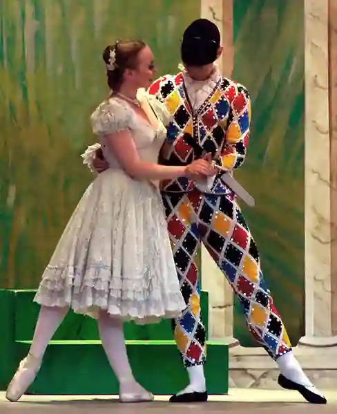
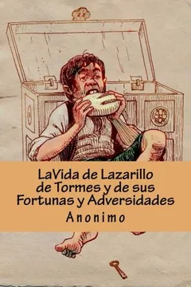
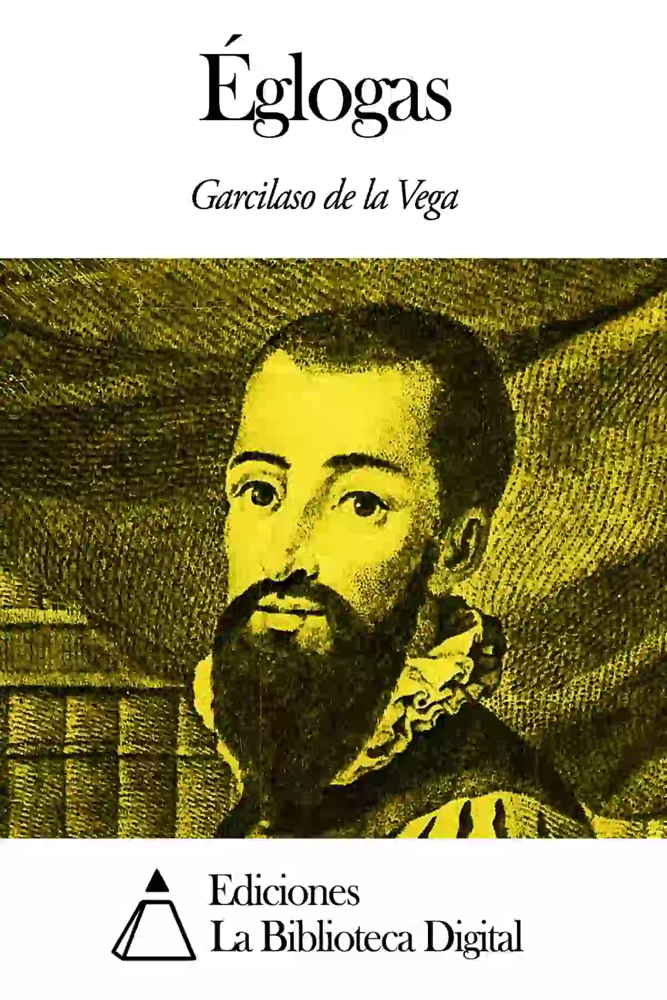
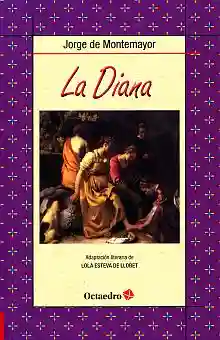
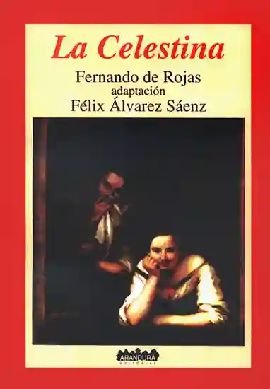
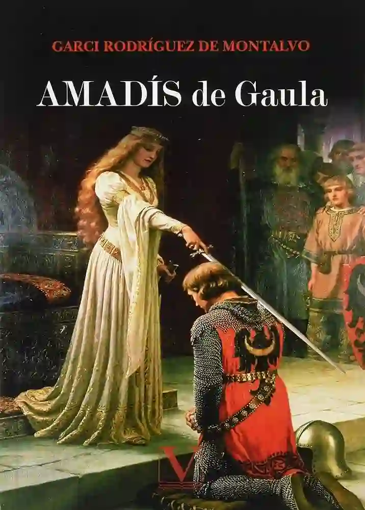
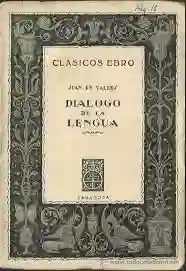
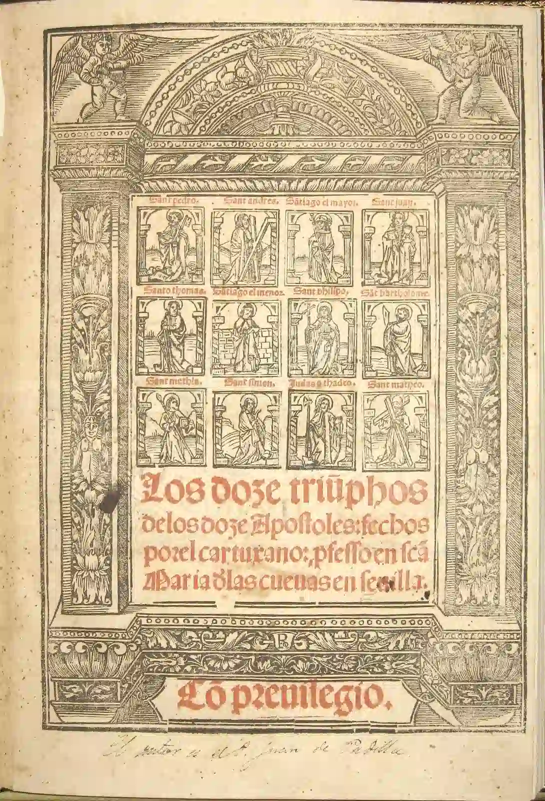
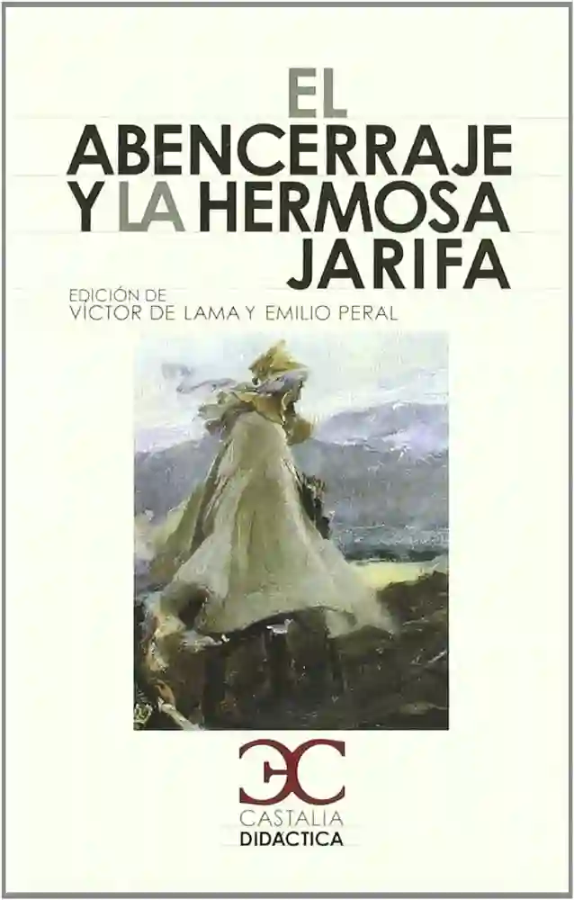

¿Quién Fue carlos I?
💠Carlos I, también conocido como Carlos I de España y V del Sacro Imperio Romano Germánico, fue un monarca del siglo XVI que gobernó sobre vastos territorios europeos y americanos. Nació el 24 de febrero de 1500 en Gante, Flandes (actual Bélgica) y murió el 21 de septiembre de 1558 en el Monasterio de Yuste, España.
💠En 1516, se convirtió en Rey de España como Carlos I, heredando los tronos de Castilla y Aragón. En 1519, fue elegido emperador del Sacro Imperio Romano Germánico, adoptando el título de Carlos V. Su reinado estuvo marcado por importantes eventos históricos, como la Reforma Protestante, la expansión del imperio español en América y numerosos conflictos europeos.
💠Carlos I/V abdicó en 1556, dividiendo su vasto imperio entre su hijo Felipe II (quien heredó España, los Países Bajos, y las posesiones italianas y americanas) y su hermano Fernando I (quien recibió los territorios austríacos y el título de emperador).
Características del mandato de Carlos I
Durante el mandato de Carlos I, se enfrentó a importantes desafíos financieros debido a los altos costos de mantener su vasto imperio, que incluía territorios en Europa y América. La expansión territorial y militar, junto con la financiación de las guerras y la administración de un imperio diverso, pusieron una presión considerable en las finanzas del reino.
Políticas expansionistas: Carlos I implementó políticas expansionistas agresivas para aumentar el poder y la influencia de su imperio. Esto incluyó la expansión en América, con la conquista y colonización de nuevos territorios, así como campañas militares en Europa para asegurar y ampliar su dominio en diversos territorios.
El reinado de Carlos I estuvo marcado por conflictos internos, tanto a nivel político como religioso. En el ámbito político, enfrentó oposición de diferentes grupos dentro de sus territorios, incluyendo nobles y ciudades que buscaban preservar sus privilegios y autonomía. En cuanto a lo religioso, la Reforma Protestante desencadenó tensiones y conflictos en varios territorios bajo su control, generando divisiones y enfrentamientos.
Carlos I buscó centralizar el poder político y administrativo en su imperio, implementando medidas para fortalecer la autoridad real y reducir la autonomía de los diferentes estados y territorios. Esto incluyó esfuerzos para unificar leyes, impuestos y administración, aunque estos intentos a menudo generaron resistencia y conflictos con las estructuras locales y regionales existentes.
Auge durante el reinado de carlos I
Teatro moderno
Este período presenció el auge del teatro moderno en Europa, especialmente en España. Autores como Lope de Vega, Calderón de la Barca y Tirso de Molina florecieron durante el Siglo de Oro español, produciendo obras teatrales que transformaron el panorama teatral de la época. El teatro se convirtió en una forma de entretenimiento popular y una herramienta poderosa para reflexionar sobre la sociedad y la condición humana.
Italianismo poético
Durante el Renacimiento, el italianismo poético se difundió por toda Europa, influenciando la poesía y la literatura. La poesía renacentista italiana, caracterizada por su énfasis en la forma, el uso de métricas específicas y temas clásicos, tuvo un impacto significativo en poetas de otros países, incluyendo España. Autores como Garcilaso de la Vega introdujeron estas tendencias italianas en la poesía española, marcando una era de renovación y experimentación en el ámbito poético.

Novela Picaresca
Durante el siglo XVI y XVII, surgió la novela picaresca en España como un género literario distintivo. Estas novelas, como "La vida de Lazarillo de Tormes y de sus fortunas y adversidades", ofrecían una visión satírica y realista de la sociedad de la época a través de las vivencias de un "pícaro", un personaje astuto y marginal. La novela picaresca se convirtió en un vehículo para explorar temas sociales, económicos y morales de manera crítica y humorística.

Literatura Durante el Reinado de Carlos I
1. Influencia del Renacimiento
- Influencia del Renacimiento: La literatura de esta época estuvo profundamente influenciada por el Renacimiento, un movimiento cultural que promovió el redescubrimiento de la literatura clásica grecorromana, el humanismo, y el énfasis en el individuo y la naturaleza. Esta influencia se manifestó en la exploración de temas clásicos, la búsqueda de la perfección formal y la incorporación de nuevos géneros y formas literarias.
2. Italianismo
- Italianismo: El contacto con la literatura y cultura italianas tuvo un impacto significativo en los escritores españoles. Poetas como Garcilaso de la Vega incorporaron las formas y temas de la poesía italiana, especialmente el soneto y la égloga, adaptándolos a la lengua y sensibilidad españolas.
3. Desarrollo del Teatro
- Desarrollo del teatro: Aunque el auge del teatro español conocido como el Siglo de Oro se desarrolló principalmente después del reinado de Carlos I, durante su reinado se sentaron las bases para este esplendor. Obras teatrales empezaron a reflejar una mayor complejidad en la estructura y en la caracterización de personajes, así como en la exploración de temas morales y sociales.
4. Novela Picaresca
- Novela picaresca: Surgió la novela picaresca, un género literario que narra las aventuras de un pícaro o antihéroe de baja condición social. "La vida de Lazarillo de Tormes y de sus fortunas y adversidades" (1554) es la obra fundacional de este género, caracterizada por su tono crítico y satírico, ofreciendo una visión realista y desmitificadora de la sociedad.
5. Poesía Mística y Ascética
- Poesía mística y ascética: Aunque más prominente en las décadas posteriores, los primeros brotes de la poesía mística y ascética comenzaron a aparecer durante el reinado de Carlos I. Esta poesía, caracterizada por su profundo sentido espiritual y religioso, buscaba expresar la unión del alma con Dios y la renuncia a los placeres mundanos.
6. Prosa Didáctica y Moralizante
- Prosa didáctica y moralizante: La literatura también incluyó obras de carácter didáctico y moralizante, influenciadas por las corrientes humanistas. Estas obras buscaban instruir al lector en virtudes y comportamientos morales, utilizando ejemplos y narraciones para ilustrar sus enseñanzas.
7. Exploración de Nuevos Mundos
- Exploración de nuevos mundos: La expansión imperial española y los descubrimientos en el Nuevo Mundo inspiraron numerosos relatos de viajes y crónicas que describían las tierras y culturas recién descubiertas. Estas obras no solo documentaban las expediciones, sino que también contribuían a la imaginación y comprensión europeas de un mundo en expansión.
| Imagen de la Obra | Título de la Obra | Descripción Breve de la Obra |
|---|---|---|
|  | "La vida de Lazarillo de Tormes y de sus fortunas y adversidades" (1554) |
Considerada la primera novela picaresca, esta obra ofrece una visión crítica y satírica de la sociedad española de la época a través de las aventuras de un pícaro. |
|  | "Églogas" - Garcilaso de la Vega |
Garcilaso de la Vega fue un poeta clave en la introducción de la poesía renacentista italiana en España. Sus églogas son ejemplos destacados de esta influencia. |
|  | "Diana" (1559) - Jorge de Montemayor |
Aunque publicada poco después del reinado de Carlos I, esta obra es representativa del auge de la novela pastoril en la literatura española, influenciada por el Renacimiento. |
|  | "La Celestina" (segunda versión publicada en 1502) - Fernando de Rojas |
Aunque la primera versión se publicó antes del reinado de Carlos I, la obra siguió siendo extremadamente influyente durante su reinado. Es una de las obras fundamentales de la literatura española, una tragicomedia que combina elementos de la novela y el teatro. |
|  | "Amadís de Gaula" (1508) - Garci Rodríguez de Montalvo |
Esta obra de caballerías, aunque publicada justo antes del reinado de Carlos I, tuvo una gran influencia durante su mandato y en la literatura posterior, inspirando numerosas imitaciones y adaptaciones. |
|  | "Diálogo de la lengua" (1535) - Juan de Valdés |
Un tratado sobre el uso correcto del español, reflejando la preocupación humanista por la lengua y su perfeccionamiento. |
|  | "Los doce triunfos de los doce apóstoles" (1541) - Fray Juan de la Cruz |
Un poema religioso que refleja la influencia de la poesía mística y ascética, que ganaría más prominencia en las décadas siguientes. |
|  | "El Abencerraje y la hermosa Jarifa" (1551) - Anónimo |
Una novela corta que mezcla elementos moriscos y cristianos, destacándose por su tratamiento romántico y caballeresco. |
Novela Picaresca
¿Cómo se originó?
La novela picaresca es un género literario que surgió en España durante el Siglo de Oro, especialmente en el siglo XVI. Se caracteriza por narrar las aventuras y desventuras de un pícaro, un personaje de baja condición social que utiliza su astucia y engaño para sobrevivir en un mundo hostil y corrupto.
Principales características
- Protagonista pícaro: El protagonista es un pícaro, generalmente de origen humilde y marginal, que carece de valores morales elevados y recurre a la trampa y el engaño para subsistir.
- Narración en primera persona: La historia suele contarse en primera persona, a modo de autobiografía, donde el pícaro relata sus propias experiencias y vivencias.
- Estructura episódica: La trama se desarrolla en una serie de episodios o aventuras independientes, a menudo sin una conexión fuerte entre ellas, lo que permite al protagonista moverse de un escenario a otro.
- Realismo y crítica social: La novela picaresca se distingue por su tono realista y su crítica a la sociedad. A través de las peripecias del pícaro, se ponen de manifiesto las injusticias, hipocresías y vicios de la sociedad del momento.
- Sátira y humor: A pesar de la dureza de las situaciones que describe, la novela picaresca emplea un tono satírico y humorístico, lo que permite una reflexión crítica y a la vez entretenida sobre la realidad social.
- Aprendizaje y desengaño: El pícaro suele pasar por una serie de aprendizajes y desengaños, lo que le lleva a una visión cínica y desencantada del mundo. Aunque busca mejorar su situación, raramente logra un ascenso social significativo.
- Retrato de la vida cotidiana: Las novelas picarescas ofrecen una descripción detallada de la vida cotidiana, especialmente de los aspectos más duros y marginales, proporcionando una visión amplia de la sociedad de la época.